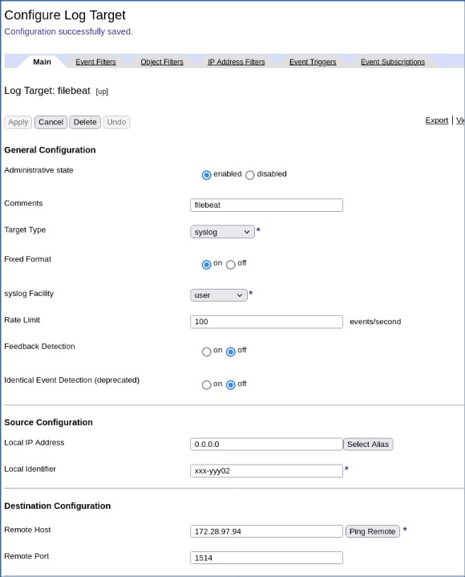
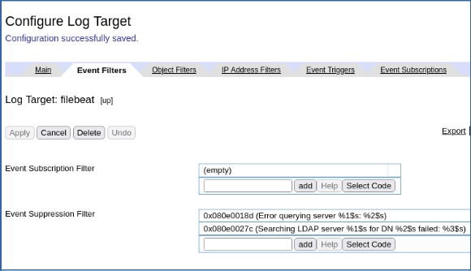
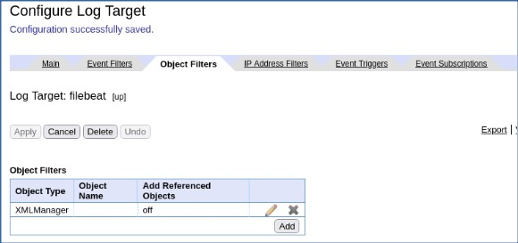
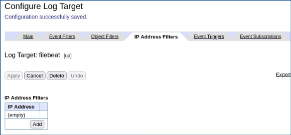
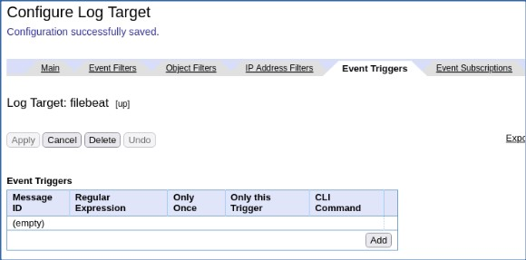
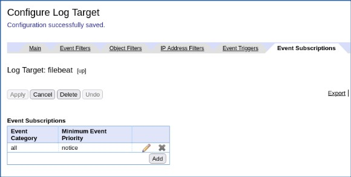

DataPower Log Target without WebGUI - Example¶
IBM DataPower: Migrate to Cloud¶
Ravi Ramnarayan
© IBM v1.26 2022-10-13
Prolog¶
- This document is a bare bones example. Please refer to DataPower Config without WebGUI for context and explanations.
- The IBM Techcon 2021 session Re-imagining DataPower in the container world explains steps to develop DataPower assemblies and configurations on your workstation. You might have to register to access the recording or download slides.
Steps¶
- Setup DataPower on Docker
- Create Log Target using WebGUI
- Isolate Log Target
configstatements - Define k8s/OCP ConfigMap & Inject DataPower Log Target
Inject Log Targetconfiginto operator Custom Resource (CR) YAML.- k8s GatewayCluster CR
- OCP APIConnectCluster CR
Setup DataPower on Docker¶
Ubuntu 20 VM ubu20¶
- Install Docker
-
Set up a local working environment
rramnara@ubu20:~$ mkdir dp-dev && cd dp-dev # setup directories for volume mounts rramnara@ubu20:~/dp-dev$ mkdir config local certs rramnara@ubu20:~/dp-dev$ chmod 777 config local certs rramnara@ubu20:~/dp-dev$ ll total 20 drwxrwxr-x 5 rramnara rramnara 4096 Mar 15 20:19 ./ drwxr-xr-x 9 rramnara rramnara 4096 Mar 15 20:37 ../ drwxrwxrwx 2 rramnara rramnara 4096 Mar 15 20:19 certs/ drwxrwxrwx 2 rramnara rramnara 4096 Mar 15 20:20 config/ drwxrwxrwx 2 rramnara rramnara 4096 Mar 15 20:20 local/ -
Start a container, mounting relevant directories (ex. config, local, certs)
Note:
docker runcommand contains-p 9090:9090which is not in Re-imagining DataPower in the container world slide 9.docker run -it \ -e DATAPOWER_ACCEPT_LICENSE=true \ -e DATAPOWER_INTERACTIVE=true \ -p 9090:9090 \ -v $(pwd)/config:/opt/ibm/datapower/drouter/config \ -v $(pwd)/local:/opt/ibm/datapower/drouter/local \ -v $(pwd)/certs:/opt/ibm/datapower/root/secure/usrcerts \ --name dp-dev \ icr.io/integration/datapower/datapower-limited:10.0.3.0Produces about 30 lines of output. The last couple of lines should resemble:
-
Access the container’s CLI, login with ‘admin’ user (default pw: admin)
-
Enable WebGUI
idg# co Global mode idg(config)# write mem Overwrite previously saved configuration? Yes/No [y/n]: y 20220315T203939.267Z [0x8100000c][mgmt][notice] : tid(7174): Saved current configuration to 'config:///auto-startup.cfg' 20220315T203939.271Z [0x81000040][mgmt][notice] domain(default): tid(7174): Domain configuration has been saved. 20220315T203939.304Z [0x8100000c][mgmt][notice] : tid(111): Saved current configuration to 'config:///auto-user.cfg' Configuration saved successfully. idg(config)# web-mgmt; admin enabled; exit Modify Web Management Service configuration idg(config)# 20220315T203958.606Z [0x8100003f][mgmt][notice] domain(default): tid(303): Domain configuration has been modified. 20220315T203958.609Z [0x00350014][mgmt][notice] web-mgmt(WebGUI-Settings): tid(303): Operational state up idg(config)# write mem Overwrite previously saved configuration? Yes/No [y/n]: y Configuration saved successfully. idg(config)# 20220315T204007.739Z [0x8100000c][mgmt][notice] : tid(7174): Saved current configuration to 'config:///auto-startup.cfg' 20220315T204007.743Z [0x81000040][mgmt][notice] domain(default): tid(7174): Domain configuration has been saved. 20220315T204007.761Z [0x8100000c][mgmt][notice] : tid(111): Saved current configuration to 'config:///auto-user.cfg' idg(config)# show web-mgmt web-mgmt [up] -------- admin-state enabled ip-address 0.0.0.0 port 9090 save-config-overwrite on idle-timeout 600 Seconds acl web-mgmt [up] ssl-config-type server enable-sts on idg(config)# exit idg# exit Goodbye. 59ab55cf2bb1 Unauthorized access prohibited. login:Note: Enter Ctrl-PQ to disengage from DataPower without killing the process.
Linux workstation¶
- Download DataPower files to workstation
rramnara:DP-LogTarget$ mkdir dp-dev-0 rramnara:DP-LogTarget$ cd dp-dev-0/ rramnara:dp-dev-0$ scp -r rramnara@192.168.122.60:/home/rramnara/dp-dev/* ./ webgui-privkey.pem 100% 1704 968.1KB/s 00:00 webgui-sscert.pem 100% 1147 1.1MB/s 00:00 default.cfg 100% 95 125.1KB/s 00:00 auto-startup.cfg 100% 20KB 19.1MB/s 00:00 auto-user.cfg 100% 293 158.1KB/s 00:00 Chrystoki.conf 100% 1440 3.0MB/s 00:00 rramnara:dp-dev-0$ ll total 12 drwxrwxr-x. 2 rramnara rramnara 4096 Mar 15 16:44 certs drwxrwxr-x. 2 rramnara rramnara 4096 Mar 15 16:44 config drwxrwxr-x. 3 rramnara rramnara 4096 Mar 15 16:44 local rramnara:dp-dev-0$ tree -L 3 . ├── certs │ ├── webgui-privkey.pem │ └── webgui-sscert.pem ├── config │ ├── auto-startup.cfg │ ├── auto-user.cfg │ └── default.cfg └── local └── luna_config ├── Chrystoki.conf ├── configData └── data 6 directories, 6 files
Create Log Target using WebGUI¶
DataPower WebGUI¶
-
Define Log Target






Linux workstation¶
- Download DataPower files to workstation
rramnara:DP-LogTarget$ mkdir dp-dev-2 rramnara:DP-LogTarget$ cd dp-dev-2/ rramnara:dp-dev-2$ scp -r rramnara@192.168.122.60:/home/rramnara/dp-dev/* ./ webgui-privkey.pem 100% 1704 2.4MB/s 00:00 webgui-sscert.pem 100% 1147 1.4MB/s 00:00 default.cfg 100% 95 183.2KB/s 00:00 auto-startup.cfg 100% 20KB 24.0MB/s 00:00 auto-user.cfg 100% 293 517.4KB/s 00:00 Chrystoki.conf 100% 1440 2.2MB/s 00:00 rramnara:dp-dev-2$ ll total 12 drwxrwxr-x. 3 rramnara rramnara 4096 Mar 16 10:06 certs drwxrwxr-x. 2 rramnara rramnara 4096 Mar 16 10:06 config drwxrwxr-x. 3 rramnara rramnara 4096 Mar 16 10:06 local rramnara:dp-dev-2$ tree -L 3 . ├── certs │ ├── luna_cert │ ├── webgui-privkey.pem │ └── webgui-sscert.pem ├── config │ ├── auto-startup.cfg │ ├── auto-user.cfg │ └── default.cfg └── local └── luna_config ├── Chrystoki.conf ├── configData └── data 7 directories, 6 files
Isolate Log Target config statements¶
Linux workstation¶
-
Isolate
configchanges
Compareauto-startup.cfgfiles.rramnara:DP-LogTarget$ diff dp-dev-0/config/auto-startup.cfg dp-dev-2/config/auto-startup.cfg 3c3 < # configuration fcdbe397c2b44f5fa3828d06078ba297 generated Tue Mar 15 16:40:07 2022; firmware version 333705 --- > # configuration 01552a3f680641409c738d06078b0ee1 generated Wed Mar 16 09:55:05 2022; firmware version 333705 179a180,214 > > logging target "filebeat" > summary "filebeat" > type syslog > priority normal > soap-version soap11 > format text > timestamp zulu > fixed-format > local-ident "xxx-yyy02" > size 500 > archive-mode rotate > upload-method ftp > rotate 3 > no ansi-color > remote-address "172.28.97.94" "1514" > local-address 0.0.0.0 > facility user > rate-limit 100 > connect-timeout 60 > idle-timeout 15 > active-timeout 0 > no feedback-detection > no event-detection > suppression-period 10 > event-filter 0x080e0018d > event-filter 0x080e0027c > object "XMLManager" > ssl-client-type proxy > retry-interval 1 > retry-attempts 1 > long-retry-interval 20 > precision microsecond > event "all" "notice" > exitCapture the output in a file, remove the lines above
logging targetand strip the leading>.
Define k8s/OCP ConfigMap & Inject DataPower Log Target¶
API Connect-DataPower installation¶
This installation is on k8s.
-
Create ConfigMap
-
Create
additionalDomainConfigfile for DataPower on k8s -
Patch DataPower GatewayCluster with additionalDomainConfig
-
Verify Log Target
You can examine the newfilebeatLog Target in WebGUI or by logging into the DataPower. See DataPower Config without WebGUI for details. -
DataPower CLI
-
DataPower WebGUI
Should be the same as in Create Log Target using WebGUI